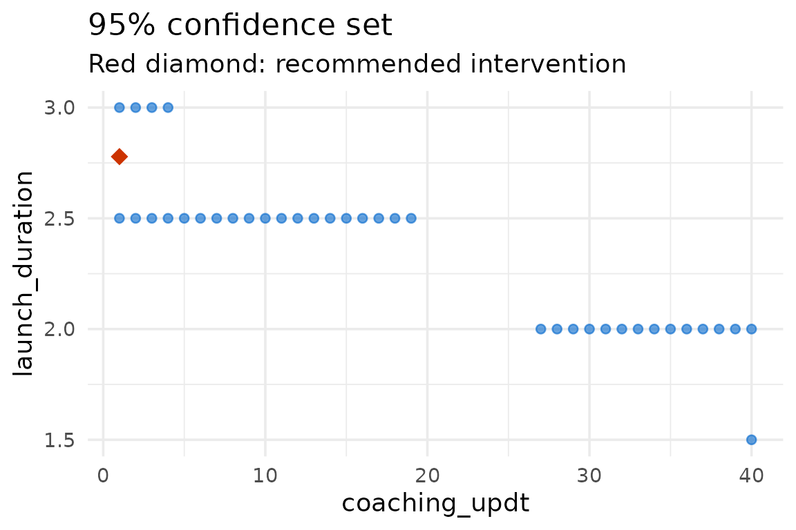

Learn-As-you-GO (LAGO) trials adapt a multi-component intervention as
the trial proceeds. At each stage the intervention is refined using the
data collected so far, so that the next stage moves toward an
intervention that is effective and affordable. The LAGO
package fits the outcome model, recommends the lowest-cost intervention
package that is expected to meet an outcome goal (and, optionally, a
power goal), and computes a confidence set for that recommendation.
This vignette walks through a single optimization on the BetterBirth
data that ships with the package. For the full argument reference see
?lago_optimization; for other worked examples see the manual
tests folder.
The data
BB_data is a cleaned version of the BetterBirth study, a
trial of the World Health Organization’s Safe Childbirth Checklist in
Uttar Pradesh, India. The binary outcome
pp3_oxytocin_mother records whether oxytocin was
administered. We treat two intervention components as adjustable:
coaching_updt (number of coaching visits) and
launch_duration (days of checklist launch).
Recommending an intervention
Suppose we want the least costly intervention that raises the
probability of oxytocin administration to at least 0.85,
for a center with a birth volume of 1.75 (in hundreds). The costs of the
two components are 1.7 and 8 per unit,
respectively.
result <- lago_optimization(
data = bb_data,
outcome_name = "pp3_oxytocin_mother",
outcome_type = "binary",
intervention_components = c("coaching_updt", "launch_duration"),
intervention_lower_bounds = c(1, 1),
intervention_upper_bounds = c(40, 5),
center_characteristics = "birth_volume_100",
center_characteristics_optimization_values = 1.75,
cost_list_of_vectors = list(c(0, 1.7), c(0, 8)),
outcome_goal = 0.85,
outcome_goal_intention = "maximize",
confidence_set_grid_step_size = c(1, 0.5),
quiet = TRUE
)
#> Warning in (function (data, input_data_structure = "individual_level",
#> outcome_name, : The lower bound for the intervention component coaching_updt is
#> greater than the minimum value in the data.
#> Warning in (function (data, input_data_structure = "individual_level",
#> outcome_name, : The lower bound for the intervention component launch_duration
#> is greater than the minimum value in the data.The quiet = TRUE argument suppresses the progress
messages so the vignette output stays clean; it does not change the
result.
The returned object has a print() method that shows the
full result on the console: an inputs recap, the fitted outcome-model
coefficient table, the overall intervention-effect test, the recommended
intervention with its cost and the estimated-outcome confidence
interval, and the confidence set:
result
#>
#> ── LAGO optimization result ────────────────────────────────────────────────────
#>
#> ── Inputs
#> Input data dimensions: 6124 rows, 21 columns
#> Outcome name: pp3_oxytocin_mother
#> Outcome type: binary
#> 2 intervention component(s): coaching_updt, launch_duration
#> 1 center characteristic(s): birth_volume_100
#> Outcome model family: binomial
#> Outcome model link: logit
#> Fixed center effects: FALSE
#> Fixed time effects: FALSE
#> Outcome goal: 0.85
#> Power goal: not specified
#> Intervention component costs: c(0, 1.7), c(0, 8)
#> Intervention lower bounds: 1, 1
#> Intervention upper bounds: 40, 5
#>
#> ── Outcome model fit
#>
#> Call:
#> glm(formula = formula, family = family_object, data = data, weights = weights)
#>
#> Coefficients:
#> Estimate Std. Error z value Pr(>|z|)
#> (Intercept) -2.299892 0.068371 -33.638 < 2e-16 ***
#> coaching_updt 0.025137 0.006112 4.113 3.91e-05 ***
#> launch_duration 1.024470 0.074135 13.819 < 2e-16 ***
#> birth_volume_100 0.664511 0.029627 22.429 < 2e-16 ***
#> ---
#> Signif. codes: 0 '***' 0.001 '**' 0.01 '*' 0.05 '.' 0.1 ' ' 1
#>
#> (Dispersion parameter for binomial family taken to be 1)
#>
#> Null deviance: 8470.8 on 6123 degrees of freedom
#> Residual deviance: 5161.2 on 6120 degrees of freedom
#> AIC: 5169.2
#>
#> Number of Fisher Scoring iterations: 6
#>
#> ── Overall intervention-effect test
#> To see the overall test results, include a 'group' column in the data with
#> values 'treatment' or 'control' (binary outcomes only).
#>
#> ── Recommended intervention
#> coaching_updt: 1
#> launch_duration: 2.7785
#> Cost: 23.9278
#> Estimated outcome: 0.85
#> 95% CI for the estimated outcome: 0.802 - 0.898
#> Outcome goal: 0.85
#>
#> ── Confidence set
#> 95% confidence set size: 10.56% of the grid
#> IQR of the cost within the 95% confidence set: 31.08 - 69.98
#> First rows of the confidence set (use $cs for all):
#> coaching_updt launch_duration birth_volume_100 CI_lower_bound
#> 81 40 1.5 1.75 0.755
#> 108 27 2.0 1.75 0.811
#> 109 28 2.0 1.75 0.814
#> 110 29 2.0 1.75 0.816
#> 111 30 2.0 1.75 0.819
#> 112 31 2.0 1.75 0.822
#> CI_upper_bound cost
#> 81 0.851 80.0
#> 108 0.851 61.9
#> 109 0.855 63.6
#> 110 0.859 65.3
#> 111 0.863 67.0
#> 112 0.867 68.7summary() renders the same output:
summary(result)
#>
#> ── LAGO optimization result ────────────────────────────────────────────────────
#>
#> ── Inputs
#> Input data dimensions: 6124 rows, 21 columns
#> Outcome name: pp3_oxytocin_mother
#> Outcome type: binary
#> 2 intervention component(s): coaching_updt, launch_duration
#> 1 center characteristic(s): birth_volume_100
#> Outcome model family: binomial
#> Outcome model link: logit
#> Fixed center effects: FALSE
#> Fixed time effects: FALSE
#> Outcome goal: 0.85
#> Power goal: not specified
#> Intervention component costs: c(0, 1.7), c(0, 8)
#> Intervention lower bounds: 1, 1
#> Intervention upper bounds: 40, 5
#>
#> ── Outcome model fit
#>
#> Call:
#> glm(formula = formula, family = family_object, data = data, weights = weights)
#>
#> Coefficients:
#> Estimate Std. Error z value Pr(>|z|)
#> (Intercept) -2.299892 0.068371 -33.638 < 2e-16 ***
#> coaching_updt 0.025137 0.006112 4.113 3.91e-05 ***
#> launch_duration 1.024470 0.074135 13.819 < 2e-16 ***
#> birth_volume_100 0.664511 0.029627 22.429 < 2e-16 ***
#> ---
#> Signif. codes: 0 '***' 0.001 '**' 0.01 '*' 0.05 '.' 0.1 ' ' 1
#>
#> (Dispersion parameter for binomial family taken to be 1)
#>
#> Null deviance: 8470.8 on 6123 degrees of freedom
#> Residual deviance: 5161.2 on 6120 degrees of freedom
#> AIC: 5169.2
#>
#> Number of Fisher Scoring iterations: 6
#>
#> ── Overall intervention-effect test
#> To see the overall test results, include a 'group' column in the data with
#> values 'treatment' or 'control' (binary outcomes only).
#>
#> ── Recommended intervention
#> coaching_updt: 1
#> launch_duration: 2.7785
#> Cost: 23.9278
#> Estimated outcome: 0.85
#> 95% CI for the estimated outcome: 0.802 - 0.898
#> Outcome goal: 0.85
#>
#> ── Confidence set
#> 95% confidence set size: 10.56% of the grid
#> IQR of the cost within the 95% confidence set: 31.08 - 69.98
#> First rows of the confidence set (use $cs for all):
#> coaching_updt launch_duration birth_volume_100 CI_lower_bound
#> 81 40 1.5 1.75 0.755
#> 108 27 2.0 1.75 0.811
#> 109 28 2.0 1.75 0.814
#> 110 29 2.0 1.75 0.816
#> 111 30 2.0 1.75 0.819
#> 112 31 2.0 1.75 0.822
#> CI_upper_bound cost
#> 81 0.851 80.0
#> 108 0.851 61.9
#> 109 0.855 63.6
#> 110 0.859 65.3
#> 111 0.863 67.0
#> 112 0.867 68.7The recommended intervention and its cost are available directly:
result$rec_int
#> [1] 1.000000 2.778472
result$rec_int_cost
#> [1] 23.92777Visualizing the confidence set
plot() shows the 95% confidence set with the recommended
intervention highlighted:
plot(result)
Adding a power goal
For a binary outcome we can also require a minimum power for the next
stage. A power goal needs a group column (“treatment” /
“control”) and the size of the next stage. If the trial is clustered,
the power calculation can additionally account for within-center
correlation through the icc argument (with
power_goal_cluster_id naming the clustering column); see
?lago_optimization. The example below uses a power goal
alone.
bb_data$group <- ifelse(bb_data$pre_post == 0, "control", "treatment")
power_result <- lago_optimization(
data = bb_data,
outcome_name = "pp3_oxytocin_mother",
outcome_type = "binary",
intervention_components = c("coaching_updt", "launch_duration"),
intervention_lower_bounds = c(1, 1),
intervention_upper_bounds = c(40, 5),
center_characteristics = "birth_volume_100",
center_characteristics_optimization_values = 1.75,
cost_list_of_vectors = list(c(0, 1.7), c(0, 8)),
power_goal = 0.8,
num_centers_in_next_stage = 10,
patients_per_center_in_next_stage = 30,
include_confidence_set = FALSE,
quiet = TRUE
)
#> Warning in (function (data, input_data_structure = "individual_level",
#> outcome_name, : The lower bound for the intervention component coaching_updt is
#> greater than the minimum value in the data.
#> Warning in (function (data, input_data_structure = "individual_level",
#> outcome_name, : The lower bound for the intervention component launch_duration
#> is greater than the minimum value in the data.
power_result$est_outcome_goal
#> [1] 0.4781663When both an outcome goal and a power goal are supplied, the optimization targets the higher of the two: the outcome goal itself, or the outcome level implied by the power goal.